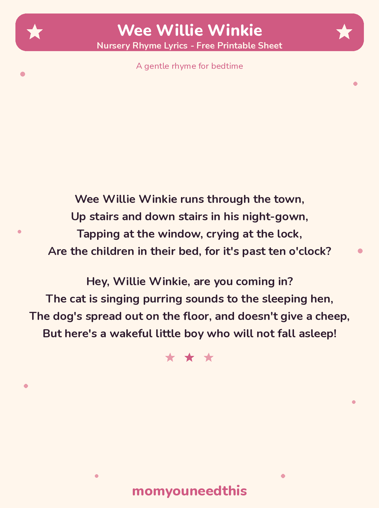

Wee Willie Winkie The Gentle Bedtime Rhyme, With Lyrics and a Free Printable
Wee Willie Winkie is the bedtime nursery rhyme about a little figure in his nightgown who runs through the town checking that every child is in bed. The full lyrics are below — both classic verses — with a free printable lyrics sheet for your bedtime routine.
Last updated: October 25, 2026
Quick Answer
Wee Willie Winkie is a gentle bedtime nursery rhyme, first printed in Scots in 1841. Willie runs through the town in his nightgown, checking that all the children are in bed. The full lyrics — the two classic verses — are on this page, with a free printable lyrics sheet to keep by the bed.
At a Glance
- Rhyme: Wee Willie Winkie
- Type: Lullaby / bedtime rhyme
- Best for: Ages 2–5, at bedtime
- Lyrics: The 2 classic verses
- Printable: 1 lyrics sheet
- Tradition: First printed in 1841, in Scots
- Cost: Free — print at home
🎵 Wee Willie Winkie Lyrics
These are the two classic verses, in the standard English version. The rhyme was first printed in Scots, and small words vary a little between books — the version note below the lyrics explains the one difference parents ask about most.
Wee Willie Winkie runs through the town,
Up stairs and down stairs in his night-gown,
Tapping at the window, crying at the lock,
Are the children in their bed, for it's past ten o'clock?
Hey, Willie Winkie, are you coming in?
The cat is singing purring sounds to the sleeping hen,
The dog's spread out on the floor, and doesn't give a cheep,
But here's a wakeful little boy who will not fall asleep!

✂️ Download Your Free Wee Willie Winkie Lyrics Sheet
Both classic verses on one bedtime sheet, in big, clear type for reading aloud.
⬇️ Download Free Lyrics Sheet 🖨️ Print🎁 Free printable for ages 2–5, at bedtime
🌙 About This Rhyme
Willie Winkie is the original bedtime patrol. Written by the Scottish poet William Miller and first printed in Scots in 1841, the rhyme sends Willie through the town in his nightgown, tapping at windows to check that every child is in bed where they belong. For a child being tucked in, that is the joke and the comfort at once: the whole town is going to sleep, and so should you.
The second verse zooms in on one wide-awake little boy: the cat is asleep, the dog is asleep, but he is not — a scene every parent recognizes. One honest note on wording: the early English version used here says “ten o'clock”; some modern books change it to eight o'clock for younger children. Either way, when Willie taps at your window, it is time for bed.
🖨️ How to Use This Rhyme
- Sing it at lights-out. Keep your voice low and slow — this one works as a lullaby as much as a rhyme, and the quieter it gets, the sleepier it works.
- Act the rounds earlier in the evening. Tiptoe around the room together, tap gently on an imaginary window, and whisper Willie's question. Save the acting for before bed, not after lights-out.
- Print the lyrics sheet. Keep it by the bed or inside the bedtime book pile, so the words are there even when you are too tired to remember them.
- Let your child “read” it back. A child who cannot read yet can still hold the sheet, recognize the lines, and say them back to you — that is early reading confidence.
🎵 More Rhymes & Fun
🎵 Nursery Rhymes
The full collection of classic rhymes to sing together, each with its own printable lyrics sheet. Browse all nursery rhymes.
🌉 Jack and Jill
The classic tumble-down-the-hill story rhyme, with its traditional Dame Dob verse. Sing Jack and Jill.
🛁 Rub-a-Dub-Dub
Three men in one tub — the short, silly bath-time rhyme toddlers love. Sing Rub-a-Dub-Dub.
📚 Learning Activities
The full hub of free printable activities for toddlers and preschoolers. Browse activities.
❓ Wee Willie Winkie FAQ
What are the lyrics to Wee Willie Winkie?
The full Wee Willie Winkie nursery rhyme lyrics are in the lyrics section above — both classic verses, from “runs through the town” to the wakeful little boy who will not fall asleep. They are also on the free printable lyrics sheet on this page.
What age is Wee Willie Winkie for?
It suits ages 2 to 5 best, as a bedtime rhyme. Younger toddlers enjoy the tiptoe rhythm and the nightgown picture; older preschoolers start joining in on the rhyming lines and Willie's window-tapping question.
Why does Willie Winkie tap at the window?
In the rhyme, Willie is checking on the whole town: he taps at the window and calls through the lock to ask whether the children are in their beds. That is what makes it a bedtime rhyme — Willie only comes out when it is past bedtime.
Can I print the lyrics sheet?
Yes — the lyrics sheet is free to print at home with no signup. It carries the same two verses as this page, in big, clear type for reading aloud at bedtime.